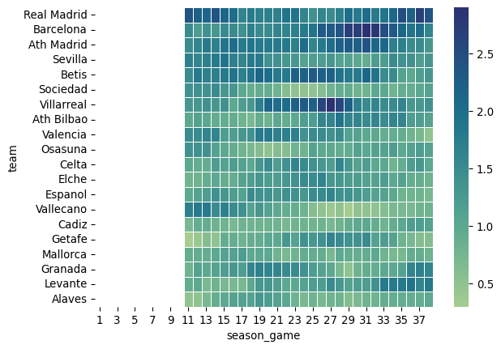

| season | date | time | ht | at | fthg | ftag | ftr | |
|---|---|---|---|---|---|---|---|---|
| 0 | s_21_22 | 2021-08-13 | 20:00 | Valencia | Getafe | 1 | 0 | H |
| 1 | s_21_22 | 2021-08-14 | 18:30 | Cadiz | Levante | 1 | 1 | D |
| 2 | s_21_22 | 2021-08-14 | 18:30 | Mallorca | Betis | 1 | 1 | D |
| 3 | s_21_22 | 2021-08-14 | 21:00 | Alaves | Real Madrid | 1 | 4 | A |
| 4 | s_21_22 | 2021-08-14 | 21:00 | Osasuna | Espanol | 0 | 0 | D |
Modeling the outcome of soccer games
predictive-modeling
Introduction
Our goal is to create a model to predict the outcome of La Liga games
Dataset
The original dataset consists of the results of each of the games played during the 2021-2022 and 2022-2023 seasons. A sample is shown in Table 1,
where fthg stands for full-time home team goals, ftag stands for full-time away team goals and ftr stands for full-time result which can take values H if the game ends in a win for the home team, A if the game ends in a win for the away team or D if the game ends in a draw.
Model: Independent Poisson models
High level approach
- We let the two teams participating in a game be Team A and Team B.
- We let the outcome of the game be W if the predicted result is that Team A wins, T if the game is predicted to end in a tie and L if Team A is predicted to lose the game.
- For each team we model the number of goals scored in a game as a Poisson distribution and we fit one based on historical data.
- We assume the number of goals scored by a team in a game is independent of the number of goals scored by the adversary and create a joint probability funcion as the product of the marginals
- We evaluate the joint distribution on a grid of possible scores
- We assign the game outcome as the one corresponding to the maximum probability of the game final score. That is, if the final score with highest probability is Team A: 3 and Team B: 2 then the outcome of the game will be W
Hashing out the details
Fitting the Poisson model
The probability mass function of a Poisson distributed random variable \(X\) is: \[ \begin{equation*} p_{X}(k) = \mathbb{P}\text{r}\left(X = k\right) = e^{-\lambda}\frac{\lambda^{k}}{k!} \end{equation*} \]
Given a sample of \(n\) realizations of the random variable the MLE of \(\lambda\) is simply the sample mean, i.e., \[ \tilde{\lambda}_{MLE} = \frac{1}{n}\sum_{i=1}^{n} x_{i} \]
To fit the Poisson r.v. we must define a sample from which the \(\lambda\) parameter will be estimated. The simplest possible approach is to use as a sample the results of the last \(N\) games where \(N\) is a fixed number. As a starting point we will choose \(N = 10\). Since some teams play more than one La Liga game a week 10 games roughly corresponds to a 2 month historic period.
We will fit a Poisson model for each team and for each week (i.e. after a game we will update the model). The implementation is done using a moving average rolling window of the 10 last games of each team.
Implementation
Starting from the original dataset we construct the input dataset for model fitting. In this dataset we keep for each team the number of goals they scored and make sure we order them in the order of occurrence. A sample is shown in Table 2,
| season | date | time | team | goals | |
|---|---|---|---|---|---|
| 0 | s_21_22 | 2021-08-14 | 21:00 | Alaves | 1 |
| 1 | s_21_22 | 2021-08-21 | 16:00 | Alaves | 0 |
| 2 | s_21_22 | 2021-08-27 | 21:15 | Alaves | 0 |
| 3 | s_21_22 | 2021-09-18 | 20:00 | Alaves | 0 |
| 4 | s_21_22 | 2021-09-22 | 18:30 | Alaves | 0 |
| 5 | s_21_22 | 2021-09-25 | 13:00 | Alaves | 1 |
| 6 | s_21_22 | 2021-10-01 | 20:00 | Alaves | 0 |
| 7 | s_21_22 | 2021-10-18 | 18:00 | Alaves | 0 |
| 8 | s_21_22 | 2021-10-23 | 15:15 | Alaves | 2 |
| 9 | s_21_22 | 2021-10-26 | 18:00 | Alaves | 1 |
| 10 | s_21_22 | 2021-10-30 | 20:00 | Alaves | 1 |
| 11 | s_21_22 | 2021-11-06 | 17:30 | Alaves | 2 |
As a check, we verify the number of games each team has played during the course of two seasons. In La Liga, 20 teams play 38 games each during the course of the season. At the end of the season 3 teams are relegated to the second division and 3 are promoted. Hence, over the course of two seasons there should be 17 teams that played both seasons and 6 teams that only played one season. The result of this count is shown in Table 3
| n_games | team | |
|---|---|---|
| 0 | 38 | 6 |
| 1 | 76 | 17 |
Model fitting consists in calculating for each team we the rolling mean over a period of previous 10 games. We have to ensure that the result of the current game is not used rolling mean calculation (if we didn’t we would have data leakage). The first estimate for the rolling mean will be for the 11th game. A sample of the model fitting results is shown in Table 4
| season | date | time | team | goals | ma10 | games_played | season_game | |
|---|---|---|---|---|---|---|---|---|
| 0 | s_21_22 | 2021-08-14 | 21:00 | Alaves | 1 | NaN | 0 | 1 |
| 1 | s_21_22 | 2021-08-21 | 16:00 | Alaves | 0 | NaN | 1 | 2 |
| 2 | s_21_22 | 2021-08-27 | 21:15 | Alaves | 0 | NaN | 2 | 3 |
| 3 | s_21_22 | 2021-09-18 | 20:00 | Alaves | 0 | NaN | 3 | 4 |
| 4 | s_21_22 | 2021-09-22 | 18:30 | Alaves | 0 | NaN | 4 | 5 |
| 5 | s_21_22 | 2021-09-25 | 13:00 | Alaves | 1 | NaN | 5 | 6 |
| 6 | s_21_22 | 2021-10-01 | 20:00 | Alaves | 0 | NaN | 6 | 7 |
| 7 | s_21_22 | 2021-10-18 | 18:00 | Alaves | 0 | NaN | 7 | 8 |
| 8 | s_21_22 | 2021-10-23 | 15:15 | Alaves | 2 | NaN | 8 | 9 |
| 9 | s_21_22 | 2021-10-26 | 18:00 | Alaves | 1 | NaN | 9 | 10 |
| 10 | s_21_22 | 2021-10-30 | 20:00 | Alaves | 1 | 0.5 | 10 | 11 |
| 11 | s_21_22 | 2021-11-06 | 17:30 | Alaves | 2 | 0.5 | 11 | 12 |
The ovarall results of model fitting can be visualized in Figure 1, a heatmap of the rate parameter for each team and for each week.

The teams are ordered by rows with the team that finished in the first place in the first row and so on. Each square on the grid is colored according to the value of the fitted rate parameter and the columns represent the number of games played, i.e. the column labeled 11 represents the eleventh game of each team. This will almost always correspond to the week of the season. Also, note that the first game for which we have a parameter is the eleventh game of each team since we chose an 10 games window for teh moving average
Teams in the top rows have a higher rate parameter and also some teams that went on a scoring streak during the season. Amongst them we have Villareal at the start of the second leg and Levante at the end of the season.
Generating predictions
To generate predictions we first attach the estimated rate parameters of the home team and of the away team for each game played in the season:
| ht | at | ftr | hma10 | ama10 | |
|---|---|---|---|---|---|
| 0 | Valencia | Getafe | H | NaN | NaN |
| 1 | Cadiz | Levante | D | NaN | NaN |
| 2 | Mallorca | Betis | D | NaN | NaN |
| 3 | Alaves | Real Madrid | A | NaN | NaN |
| 4 | Osasuna | Espanol | D | NaN | NaN |
We then generate (for each game) all possible results starting from 0-0 and up to 5-5, i.e. 36 possible scores for each game and assign the corresponding probability using the Poisson mass probability function
| ht | at | fthg | ftag | ftr | hma10 | ama10 | pred_hgoals | pred_agoals | h_prob | a_prob | joint_prob | |
|---|---|---|---|---|---|---|---|---|---|---|---|---|
| 5833 | Villarreal | Vallecano | 2 | 0 | H | 1.0 | 1.4 | 0 | 1 | 0.367879 | 0.345236 | 0.127005 |
| 5839 | Villarreal | Vallecano | 2 | 0 | H | 1.0 | 1.4 | 1 | 1 | 0.367879 | 0.345236 | 0.127005 |
| 20419 | Villarreal | Vallecano | 0 | 1 | A | 1.1 | 1.4 | 1 | 1 | 0.366158 | 0.345236 | 0.126411 |
| 20413 | Villarreal | Vallecano | 0 | 1 | A | 1.1 | 1.4 | 0 | 1 | 0.332871 | 0.345236 | 0.114919 |
| 5832 | Villarreal | Vallecano | 2 | 0 | H | 1.0 | 1.4 | 0 | 0 | 0.367879 | 0.246597 | 0.090718 |
| 5838 | Villarreal | Vallecano | 2 | 0 | H | 1.0 | 1.4 | 1 | 0 | 0.367879 | 0.246597 | 0.090718 |
| 20418 | Villarreal | Vallecano | 0 | 1 | A | 1.1 | 1.4 | 1 | 0 | 0.366158 | 0.246597 | 0.090293 |
| 5834 | Villarreal | Vallecano | 2 | 0 | H | 1.0 | 1.4 | 0 | 2 | 0.367879 | 0.241665 | 0.088904 |
| 5840 | Villarreal | Vallecano | 2 | 0 | H | 1.0 | 1.4 | 1 | 2 | 0.367879 | 0.241665 | 0.088904 |
| 20420 | Villarreal | Vallecano | 0 | 1 | A | 1.1 | 1.4 | 1 | 2 | 0.366158 | 0.241665 | 0.088488 |
| 20412 | Villarreal | Vallecano | 0 | 1 | A | 1.1 | 1.4 | 0 | 0 | 0.332871 | 0.246597 | 0.082085 |
| 20414 | Villarreal | Vallecano | 0 | 1 | A | 1.1 | 1.4 | 0 | 2 | 0.332871 | 0.241665 | 0.080443 |
| 20425 | Villarreal | Vallecano | 0 | 1 | A | 1.1 | 1.4 | 2 | 1 | 0.201387 | 0.345236 | 0.069526 |
| 5845 | Villarreal | Vallecano | 2 | 0 | H | 1.0 | 1.4 | 2 | 1 | 0.183940 | 0.345236 | 0.063503 |
| 20424 | Villarreal | Vallecano | 0 | 1 | A | 1.1 | 1.4 | 2 | 0 | 0.201387 | 0.246597 | 0.049661 |
| 20426 | Villarreal | Vallecano | 0 | 1 | A | 1.1 | 1.4 | 2 | 2 | 0.201387 | 0.241665 | 0.048668 |
| 5844 | Villarreal | Vallecano | 2 | 0 | H | 1.0 | 1.4 | 2 | 0 | 0.183940 | 0.246597 | 0.045359 |
| 5846 | Villarreal | Vallecano | 2 | 0 | H | 1.0 | 1.4 | 2 | 2 | 0.183940 | 0.241665 | 0.044452 |
| 5835 | Villarreal | Vallecano | 2 | 0 | H | 1.0 | 1.4 | 0 | 3 | 0.367879 | 0.112777 | 0.041488 |
| 5841 | Villarreal | Vallecano | 2 | 0 | H | 1.0 | 1.4 | 1 | 3 | 0.367879 | 0.112777 | 0.041488 |
| 20421 | Villarreal | Vallecano | 0 | 1 | A | 1.1 | 1.4 | 1 | 3 | 0.366158 | 0.112777 | 0.041294 |
| 20415 | Villarreal | Vallecano | 0 | 1 | A | 1.1 | 1.4 | 0 | 3 | 0.332871 | 0.112777 | 0.037540 |
| 20431 | Villarreal | Vallecano | 0 | 1 | A | 1.1 | 1.4 | 3 | 1 | 0.073842 | 0.345236 | 0.025493 |
| 20427 | Villarreal | Vallecano | 0 | 1 | A | 1.1 | 1.4 | 2 | 3 | 0.201387 | 0.112777 | 0.022712 |
| 5851 | Villarreal | Vallecano | 2 | 0 | H | 1.0 | 1.4 | 3 | 1 | 0.061313 | 0.345236 | 0.021168 |
| 5847 | Villarreal | Vallecano | 2 | 0 | H | 1.0 | 1.4 | 2 | 3 | 0.183940 | 0.112777 | 0.020744 |
| 20430 | Villarreal | Vallecano | 0 | 1 | A | 1.1 | 1.4 | 3 | 0 | 0.073842 | 0.246597 | 0.018209 |
| 20432 | Villarreal | Vallecano | 0 | 1 | A | 1.1 | 1.4 | 3 | 2 | 0.073842 | 0.241665 | 0.017845 |
| 5850 | Villarreal | Vallecano | 2 | 0 | H | 1.0 | 1.4 | 3 | 0 | 0.061313 | 0.246597 | 0.015120 |
| 5852 | Villarreal | Vallecano | 2 | 0 | H | 1.0 | 1.4 | 3 | 2 | 0.061313 | 0.241665 | 0.014817 |
| 5836 | Villarreal | Vallecano | 2 | 0 | H | 1.0 | 1.4 | 0 | 4 | 0.367879 | 0.039472 | 0.014521 |
| 5842 | Villarreal | Vallecano | 2 | 0 | H | 1.0 | 1.4 | 1 | 4 | 0.367879 | 0.039472 | 0.014521 |
| 20422 | Villarreal | Vallecano | 0 | 1 | A | 1.1 | 1.4 | 1 | 4 | 0.366158 | 0.039472 | 0.014453 |
| 20416 | Villarreal | Vallecano | 0 | 1 | A | 1.1 | 1.4 | 0 | 4 | 0.332871 | 0.039472 | 0.013139 |
| 20433 | Villarreal | Vallecano | 0 | 1 | A | 1.1 | 1.4 | 3 | 3 | 0.073842 | 0.112777 | 0.008328 |
| 20428 | Villarreal | Vallecano | 0 | 1 | A | 1.1 | 1.4 | 2 | 4 | 0.201387 | 0.039472 | 0.007949 |
| 5848 | Villarreal | Vallecano | 2 | 0 | H | 1.0 | 1.4 | 2 | 4 | 0.183940 | 0.039472 | 0.007260 |
| 20437 | Villarreal | Vallecano | 0 | 1 | A | 1.1 | 1.4 | 4 | 1 | 0.020307 | 0.345236 | 0.007011 |
| 5853 | Villarreal | Vallecano | 2 | 0 | H | 1.0 | 1.4 | 3 | 3 | 0.061313 | 0.112777 | 0.006915 |
| 5857 | Villarreal | Vallecano | 2 | 0 | H | 1.0 | 1.4 | 4 | 1 | 0.015328 | 0.345236 | 0.005292 |
| 20436 | Villarreal | Vallecano | 0 | 1 | A | 1.1 | 1.4 | 4 | 0 | 0.020307 | 0.246597 | 0.005008 |
| 20438 | Villarreal | Vallecano | 0 | 1 | A | 1.1 | 1.4 | 4 | 2 | 0.020307 | 0.241665 | 0.004907 |
| 5837 | Villarreal | Vallecano | 2 | 0 | H | 1.0 | 1.4 | 0 | 5 | 0.367879 | 0.011052 | 0.004066 |
| 5843 | Villarreal | Vallecano | 2 | 0 | H | 1.0 | 1.4 | 1 | 5 | 0.367879 | 0.011052 | 0.004066 |
| 20423 | Villarreal | Vallecano | 0 | 1 | A | 1.1 | 1.4 | 1 | 5 | 0.366158 | 0.011052 | 0.004047 |
| 5856 | Villarreal | Vallecano | 2 | 0 | H | 1.0 | 1.4 | 4 | 0 | 0.015328 | 0.246597 | 0.003780 |
| 5858 | Villarreal | Vallecano | 2 | 0 | H | 1.0 | 1.4 | 4 | 2 | 0.015328 | 0.241665 | 0.003704 |
| 20417 | Villarreal | Vallecano | 0 | 1 | A | 1.1 | 1.4 | 0 | 5 | 0.332871 | 0.011052 | 0.003679 |
| 20434 | Villarreal | Vallecano | 0 | 1 | A | 1.1 | 1.4 | 3 | 4 | 0.073842 | 0.039472 | 0.002915 |
| 5854 | Villarreal | Vallecano | 2 | 0 | H | 1.0 | 1.4 | 3 | 4 | 0.061313 | 0.039472 | 0.002420 |
The accuracy of the model is 0.3711 and the balanced accuracy is 0.3952